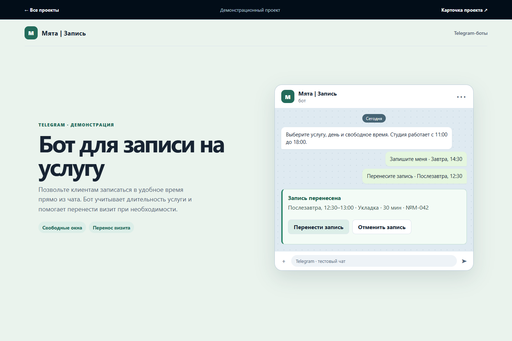

Telegram-боты / Демонстрационный проект
Бот для записи на услугу
Для салона, студии или другой компании, принимающей клиентов по записи. Клиент сам выбирает время, а администратору проще вести расписание.
Что умеет решение
Бот рассчитывает доступное время по длительности услуги, рабочим часам и занятым интервалам. Клиент может подтвердить визит, перенести его или освободить время при отмене.
Попробуйте в демо
Подтвердите стрижку на 14:30. Нажмите «Перенести запись», выберите «Укладка» на послезавтра, укажите новое время и подтвердите перенос.

Проект работает в браузере на тестовых данных. Сторонний аналог на GitHub ↗

